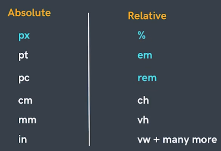

Inline and Block Elements
Block Elements :-- Takes up the full-width available (whole block).
- Start from new line.
- Takes up only necessary width.
- Don't start from new line.
- In inline element Padding is only implemented on left and Right. browser will ignore the other padding properties.
- In inline element Margin is only implemented on left and Right. browser will ignore the other margin properties.
| BLOCK ELEMENT | INLINE ELEMENT |
|---|---|
| Always start on a new line. | Do not start on a new line. |
| Take up as much horizontal space as possible (the full width of the container or browser window if there is no container). | Only use as much horizontal space as required by the content. Do not accept width and height CSS properties. |
| Will respect width and height CSS properties. | Margins will work horizontally, but not vertically. |
| Horizontal and vertical margins both work. | Padding works on all sides, but the top and bottom may overlap other elements. |
Display Property :-
It sets whether an element is treated as a block or inline element and the layout used for its children.
display: block;
display: inline-block;
| Value | Description | CSS Code |
|---|---|---|
| inline | Displays an element as an inline element. Any height and width properties will have no effect. This is default. | display: inline; |
| block | Displays an element as a block element. It starts on a new line, and takes up the whole width. | display: block; |
| inline-block | Displays an element as an inline-level block container. The element itself is formatted as an inline element, but you can apply height and width values | display: inline-block; |
| flex | Displays an element as a block-level flex container. | display: flex; |
| grid | Displays an element as a block-level grid container. | display: grid; |
| none | The element is completely removed | display: none; |
Units In CSS
Note :- We have studied absolute unit (PX) in previous html chapter in this we will talk about relative units.
Relative Units:-
-
Percentages (%) :-
It is often used to define a size as relative to an element's parent object.
eg:
width : 33.33% //relative to the parent
margin-left : 50% //relative to the parent size -
Em :-
⋄ Font size of the parent, in the case of typographical properties (text related properties) like font-size / font-weight
Drawback of Em :-
⋄ and font size of the element itself, in the case of other properties like width / height / padding / margin.Snowball Effect in nested elements.
-
Rem(Root Em) :-
Font size of the root element.
eg :
font-size: 2rem;
//it will make the font-size of the all the child and nested child elements by double the size of the root element.